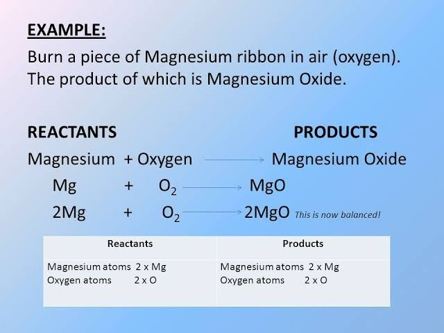
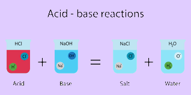
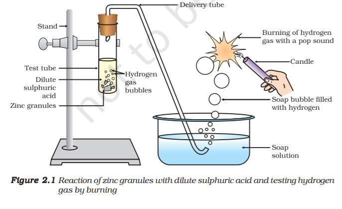
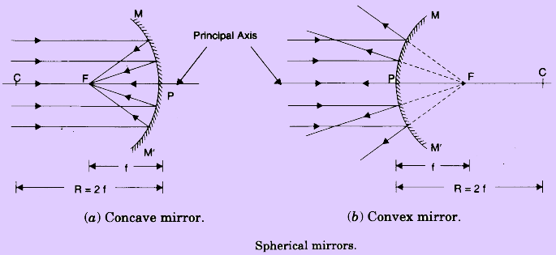

| Chemical Reactions and Equations |
Consider the following situations of daily life and think what happens
when –
-milk is left at room temperature during summers.
-an iron tawa/pan/nail is left exposed to humid atmosphere.
-grapes get fermented.
-food is cooked.
-food gets digested in our body.
-we respire.
In all the above situations, the nature and the identity of the initial
substance have somewhat changed. We have already learnt about physical
and chemical changes of matter in our previous classes. Whenever a chemical
change occurs, we can say that a chemical reaction has taken place.
You may perhaps be wondering as to what is actually meant by a
chemical reaction. How do we come to know that a chemical reaction
has taken place? Let us perform some activities to find the answer to
these questions.
|
| CHEMICAL EQUATIONS |
| 
|
Activity 1.1 can be described as –
when a magnesium ribbon is burnt in
oxygen, it gets converted to magnesium oxide. This description of a
chemical reaction in a sentence form is quite long. It can be written in a
shorter form.
The simplest way to do this is to write it in the form of a
word-equation.
The word-equation for the above reaction would be –
Magnesium + Oxygen → Magnesium oxide (1.1)
The substances that undergo chemical change in the reaction (1.1),
magnesium and oxygen, are the reactants. The new substance is
magnesium oxide, formed during the reaction, as a product.
A word-equation shows change of reactants to products through an
arrow placed between them. The reactants are written on the left-hand
side (LHS) with a plus sign (+) between them. Similarly, products are
written on the right-hand side (RHS) with a plus sign (+) between them.
The arrowhead points towards the products, and shows the direction of
the reaction.
|
Is there any other shorter way for representing chemical equations?
Chemical equations can be made more concise and useful if we use
chemical formulae instead of words.
A chemical equation represents a
chemical reaction. If you recall formulae of magnesium, oxygen and
magnesium oxide, the above word-equation can be written as –
Mg + O2 → MgO (1.2)
Count and compare the number of atoms of each element on the
LHS and RHS of the arrow.
Is the number of atoms of each element the
same on both the sides?
If yes, then the equation is balanced. If not,
then the equation is unbalanced because the mass is not the same on
both sides of the equation.
Such a chemical equation is a skeletal
chemical equation for a reaction.
Equation (1.2) is a skeletal chemical
equation for the burning of magnesium in air. |
| ACIDS, BASES AND SALTS |
You have learnt in your previous classes that the sour and bitter
tastes of food are due to acids and bases, respectively, present in them.
If someone in the family is suffering from a problem of acidity after
overeating, which of the following would you suggest as a remedy– lemon
juice, vinegar or baking soda solution?
n Which property did you think of while choosing the remedy?
Surely you must have used your knowledge about the ability of
acids and bases to nullify each other’s effect.
n Recall how we tested sour and bitter substances without tasting
them.
You already know that acids are sour in taste and change the colour
of blue litmus to red, whereas, bases are bitter and change the colour of
the red litmus to blue. Litmus is a natural indicator, turmeric is another
such indicator.
Have you noticed that a stain of curry on a white cloth
becomes reddish-brown when soap, which is basic in nature, is scrubbed
on it? It turns yellow again when the cloth is washed with plenty of
water.
You can also use synthetic indicators such as methyl orange and
phenolphthalein to test for acids and bases. |
| 
|
| How do Acids and Bases React with Metals? |
Note that the metal in the above reactions displaces hydrogen atoms
from the acids as hydrogen gas and forms a compound called a salt.
Thus, the reaction of a metal with an acid can be summarised as –
Acid + Metal → Salt + Hydrogen gas
Can you now write the equations for the reactions you have observed?
The reaction that takes place can be written as follows.
2NaOH(aq) + Zn(s) → Na2ZnO2
(Sodium zincate)
You find again that hydrogen is formed in the reaction. However,
such reactions are not possible with all metals. |
| 
|
In Section 2.1 we have seen that all acids have similar chemical
properties. What leads to this similarity in properties?
We saw in Activity
2.3 that all acids generate hydrogen gas on reacting with metals, so
hydrogen seems to be common to all acids.
Let us perform an Activity to
investigate whether all compounds containing hydrogen are acidic.
The bulb will start glowing in the case of acids, as shown in Fig. 2.3.
But you will observe that glucose and alcohol solutions do not conduct
electricity. Glowing of the bulb indicates that there is a flow of electric
current through the solution. The electric current is carried through the
acidic solution by ions.
Acids contain H+
ion as cation and anion such as Cl–
in HCl, NO3
–
in
HNO3
, SO2–
4
in H2
SO4
, CH3COO–
in CH3COOH. Since the cation present in
acids is H+
, this suggests that acids produce hydrogen ions, H+
(aq), in
solution, which are responsible for their acidic properties |
| LIGHT - REFLECTION AND REFRACTION |
We see a variety of objects in the world around us. However, we are
unable to see anything in a dark room. On lighting up the room,
things become visible.
What makes things visible? During the day, the
sunlight helps us to see objects. An object reflects light that falls on it.
This reflected light, when received by our eyes, enables us to see things.
We are able to see through a transparent medium as light is transmitted
through it. There are a number of common wonderful phenomena
associated with light such as image formation by mirrors, the twinkling
of stars, the beautiful colours of a rainbow, bending of light by a medium
and so on.
A study of the properties of light helps us to explore them.
By observing the common optical phenomena around us, we may
conclude that light seems to travel in straight lines.
The fact that a small
source of light casts a sharp shadow of an opaque object points to this
straight-line path of light, usually indicated as a ray of light.
|

|
| REFLECTION-SPHERICAL MIRRORS |
The reflecting surface of a spherical mirror may be curved inwards or
outwards. A spherical mirror, whose reflecting surface is curved inwards,
that is, faces towards the centre of the sphere, is called a concave mirror.
A spherical mirror whose reflecting surface is curved outwards, is called
a convex mirror. The schematic representation of these mirrors is shown
in Fig. 10.1. You may note in these diagrams that the back
of the mirror is shaded.
You may now understand that the surface of the spoon
curved inwards can be approximated to a concave mirror
and the surface of the spoon bulged outwards can be
approximated to a convex mirror.
Before we move further on spherical mirrors, we need to
recognise and understand the meaning of a few terms.
These
terms are commonly used in discussions about spherical
mirrors. The centre of the reflecting surface of a spherical
mirror is a point called the pole. It lies on the surface of the
mirror. The pole is usually represented by the letter P.
The reflecting surface of a spherical mirror forms a part of a sphere.
This sphere has a centre.
This point is called the centre of curvature of
the spherical mirror. It is represented by the letter C.
Please note that the
centre of curvature is not a part of the mirror. It lies outside its reflecting
surface. The centre of curvature of a concave mirror lies in front of it.
However, it lies behind the mirror in case of a convex mirror. You may
note this in Fig.10.2 (a) and (b).
The radius of the sphere of which the
reflecting surface of a spherical mirror forms a part, is called the radius
of curvature of the mirror. It is represented by the letter R.
You may note
that the distance PC is equal to the radius of curvature. Imagine a straight
line passing through the pole and the centre of curvature of a spherical
mirror. This line is called the principal axis.
Remember that principal
axis is normal to the mirror at its pole. |
| 
|
The paper at first begins to burn producing smoke. Eventually it
may even catch fire. Why does it burn? The light from the Sun is converged
at a point, as a sharp, bright spot by the mirror.
In fact, this spot of light
is the image of the Sun on the sheet of paper. This point is
the focus of the concave mirror. The heat produced due to
the concentration of sunlight ignites the paper.
The distance
of this image from the position of the mirror gives the
approximate value of focal length of the mirror.
Let us try to understand this observation with the help
of a ray diagram.
Observe Fig.10.2 (a) closely. A number of rays parallel
to the principal axis are falling on a concave mirror. Observe
the reflected rays.
They are all meeting/intersecting at a
point on the principal axis of the mirror. This point is called
the principal focus of the concave mirror.
Similarly, observe
Fig. 10.2 (b). How are the rays parallel to the principal axis,
reflected by a convex mirror?
The reflected rays appear to
come from a point on the principal axis. This point is called
the principal focus of the convex mirror.
The principal focus
is represented by the letter F. The distance between the
pole and the principal focus of a spherical mirror is called
the focal length. It is represented by the letter f |